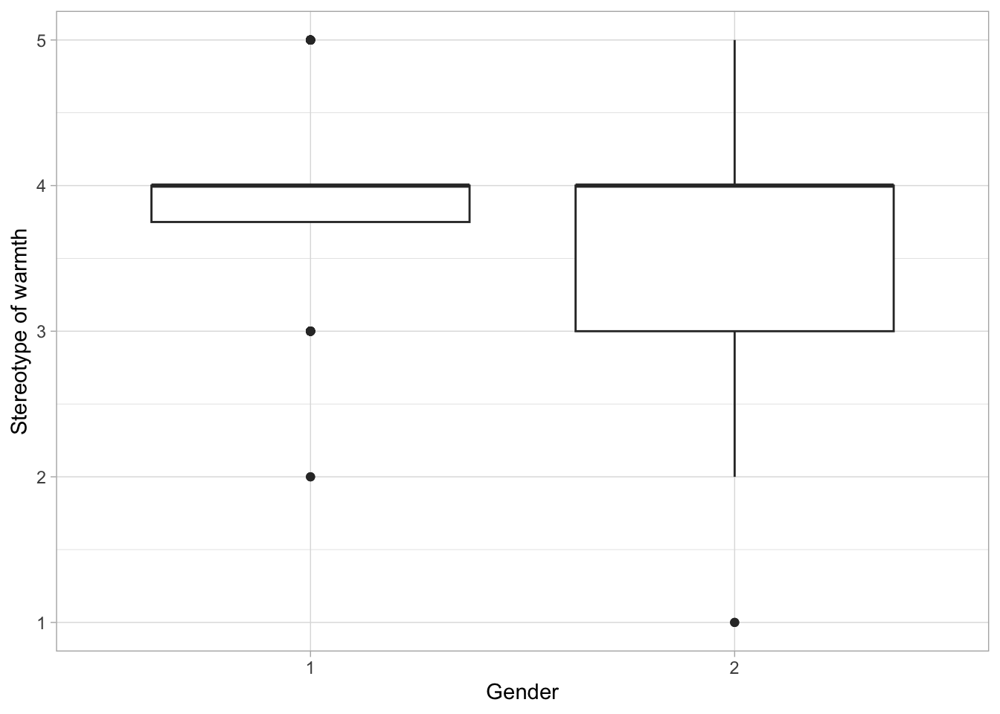
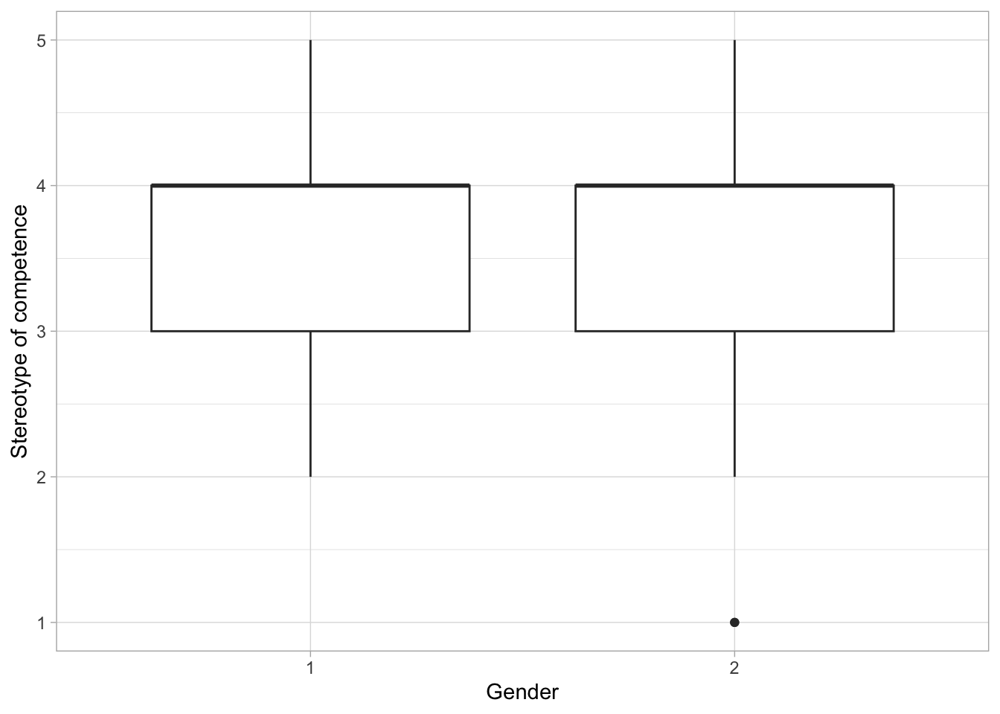

{kind=link}
# installs package `rmarkdown` and all dependencies
install.packages("rmarkdown", dependencies = TRUE)3 Automatization
Automatization of the work flow, as I mean it throughout the seminar, is a holistic or integrated approach to the work flow whereby repetitive tasks can be reduced through the use of code and a designated work environment.
This approach can be useful to reduce working time, ensuring reproducible outcome as well as enhancing work transparency.
Among the domains where this is an asset are:
- Research: Data analysis and results interpretation, writing manuscripts, and adhering to open science.
- Applied sector: Writing of repetitive reports.
- Education: Transparent homework.
This chapter covers the basics of creating and working in an integrated work environment.
Elements and structure
The first thing we need is to install the package rmarkdown (and all dependencies, meaning all the packages that rmarkdown needs to function properly). An introduction to R Markdown is available on the official website1.
After the package rmarkdown, including its dependencies, is successfully installed, we should be able to create and work in .Rmd files.
Create your first .Rmd file and give it a name. For example, example.Rmd. You should see it now lower-right panel Files/Packages/Help.
{kind=link}
Tip 3.1: Workflow simplified with projects
I recommend always working with R projects which makes it easy for code dependencies and gives structure to your work flow. To associate your project to an .Rproj, go to File and create a New project. Make sure you associate the current folder you are working in with the Rproj. This guide can help further.
Once the .Rmd has been created, you should be able to open and edit it. It should look like this.
{kind=link}
In Figure 3.2 there are numbered lines from 1 to 30. These indicate lines in the rmarkdown file. We refer to these to discuss elements of the file.
Lines 1 through 5 (note the
---) hold theyamlheader element. Here is where you indicate the characteristics of the entirermarkdowndocument, and it includes for example the kind ofoutputfile you want generated,titleof the document ordateof the document version. Many otheryamlattributes exist and depending on your goals, you can easily find them online using a version of the search stringyaml rmarkdown attributes.Lines 7 through 9 (as well as 17-20 and 25-27) are
code chunks. In this case, they arercode chunks, as signaled by the small letterr. Code chunks are what makesrmarkdowndocuments so powerful. Integrating code chunks into text facilitates the creation of live documents. In other words, plain text merged with code. Each code chunk has multiple attributes that can modify the way the output of the code is integrated and presented in the output document. Note for example at line 7{r setup, include=FALSE}.setupis the name of the code chunk and this is extremely helpful to give structure to the document but also when cross-referencing figures and tables in the document.,the comma is crucial here because it signals that what follows are settings of the code ouputinclude=FALSEis one such setting attribute and indicates that the code output is not integrated in the output document BUT it runs in the background.
Knit

Figure 3.3 is an overview of the workflow from an .Rmd (editable rmarkdown document) to an output document which can be .pdf, .html, .docx and so on. One crucial step happens during the knit of .Rmd file. Basically, in this step you knit everything from the .Rmd document together. The name comes from knitting, which is, well, creating something nice and creative from nothing.
{kind=link}
In fact, the very Figure 3.4 above was knited to the final document.
The knit function comes pre-installed with RStudio and can be found in the source panel. Identify it, and knit your first .Rmd file first into a .pdf and then into a .html file.
Tip 3.2: Latex distributions for PDF
If knit to PDF didn’t work, it might be because we need a latex distribution on the machine that r can work with. Try installing the package tinytex (Read more on https://yihui.org/tinytex/)
# to install tinytex distribution
install.packages('tinytex')
tinytex::install_tinytex()
# to uninstall TinyTeX, run tinytex::uninstall_tinytex() Once you knit the .Rmd file, a new file will be created in the designated folder. Voilà - you just created your first PDF and/ or HTML document.
Live documents
For the purpose of this seminar, I call live documents those documents that are coded to retrieve data and/ or information from external source material (e.g., datasets or meta-data such as from Excel sheets). This is the building block for creating all sorts of automatized reports.
3.0.1 Path dependencies
Since we are working inside an .Rproj, all dependencies are already set up. This helps because when interacting with external source material we need to specify where the code should look for it. This is possible also without working in an .Rproj but the dependencies are increasingly more complex to set up. For one, the migration from one operating system to the other may break these dependecies. Furthermore, you need to find the file path on the local machine and then include it in the code. Note that in case of deploying (uploading) the project on GitHub the code will break because, of course, the dependencies are only locally relevant. If, however, we work in .Rproj and we push all the project files on GitHub, then we need not worry about file paths, these are by default set up through the use of the project.
Return to the first .Rmd we previously created. Open it in RStudio.
Once opened, we may choose to delete the default content, leaving only the yaml header intact. Or we may choose to keep the default content. I choose to delete it for the sake of simplicity.
3.0.2 The set up
We can start by setting up the work environment. This means, we should first install the packages we’d need in the process.
We install using pacman the packages tidyverse, readxl (for reading Excel sheets), haven (for reading SPSS files), sjlabelled (for dealing with labelled dataframes), kable and kableExtra (for creating tables).
install.packages("pacman")
pacman::p_load(tidyverse,readxl,haven,sjlabelled,kable, kableExtra)
# note: this exact code chunk might end up looking differently in the short book
# this is becauase i'd install packages as needed3.0.3 Importing data
Next, we import our dataset in .sav format and the Excel sheet in .xlsx format. This will allow us access to the contents of those external source material which we can integrate in our final document.
To import these external source material, remember to use objects to store that information. In other words, we import the source material and assing it to objects that we can then perform varying actions onto.
# create an object dataframe example `dfex` and assign to it the .sav file `sample.sav` that was introduced previously
dfex<-haven::read_sav("data/sample.sav")
# create an object movies metadata `dfmv` and assign to it the .xlsx file `movies.xlsx`
# note the different paths to these files
# note that we specify which sheet to read too; here only sheet 1 is imported
dfmv<-readxl::read_excel("mat/movies.xlsx",1)
# next, we check if the source material was imported successfully by observing the first lines in the tables
head(dfex)# A tibble: 6 × 9
ppn gen age res res_other men_warm men_comp wom_warm wom_comp
<dbl> <dbl+lbl> <dbl> <dbl+lbl> <chr> <dbl+lb> <dbl+lb> <dbl+lb> <dbl+lb>
1 459 1 [Female] 24 5 [Iasi] -99 3 [Und… 4 [Agr… 3 [Unde… 4 [Agre…
2 592 2 [Male] 21 5 [Iasi] -99 3 [Und… 4 [Agr… 3 [Unde… 3 [Unde…
3 634 2 [Male] 21 NA petrosani 4 [Agr… 5 [Str… 4 [Agre… 4 [Agre…
4 369 1 [Female] 30 8 [Gala… -99 NA NA 4 [Agre… 4 [Agre…
5 121 1 [Female] 21 4 [Timi… -99 4 [Agr… 3 [Und… 3 [Unde… 4 [Agre…
6 127 1 [Female] 20 4 [Timi… -99 4 [Agr… 4 [Agr… 4 [Agre… 2 [Disa…head(dfmv)# A tibble: 4 × 6
Movie Actor Like Why Grade Wikilink
<chr> <chr> <chr> <chr> <dbl> <chr>
1 John Wick Keanu Reeves Yes Fight … 10 https:/…
2 Call me by your name Timothee Chalamet Yes Beauti… 10 https:/…
3 Terminator Arnold Schwarzenegger Yes Arnold 9 https:/…
4 4 months 3 weeks and 2 days <NA> Yes Portra… 8 https:/…{kind=link}
If all went well, your .Rmd should look similar to mine (see Figure 3.5).
3.0.4 Plain text vs. live text
In some ways, what we have coded thus far is also an automatized work routine in that the .Rmd document automatically retrieves the external source material every single time when it is knit-ed into a PDF or HTML file.
This is however not so helpful because the display of those contents are static, or as plain information. Static in the sense that we would still have to read and retrieve the desired summary and/ or information from specific combinations of rows-columns by hand.
With a bit of work we can transition from plain text to live text. And here is where the proper automatization of the work flow begins.
With live text, or in-line code, we can integrate code chunks into plain text so that through knit function rmarkdown automatically enhances the plain text with the desired information from the external source material. This can be extremely helpful when writing repetitive reports, for instance Another example is when we want to quickly have a look at progress of a data collection process.
The tricky part with live text is to know exactly what to retrieve from the external source material and in what kind of vector that information is stored. Character (text) and numerical vectors behave differently and have different characteristics.
Let us write our first short paragraph that integrates plain text and live text.
. . .
BEGIN EXAMPLE
This is an example of how automatization can be implemented in the work flow. My list of movies include 4 entries. The title of those movies are John Wick, Call me by your name, Terminator, 4 months 3 weeks and 2 days. Is there a movie that I actually don’t like on that list, well, the answer is that I dislike exactly 0 movies on that list.
END EXAMPLE
. . .
This is tricky to observe here, so I attach an image of the actual .Rmd document.
{kind=link}
Copy the text from this code chunk into your .Rmd file and it should look like in Figure 3.6.
This is an example of how automatization can be implemented in the work flow. My list of movies include `r nrow(dfmv)` entries. The title of those movies are `r dfmv$Movie`. Is there a movie that I actually don't like on that list, well, the answer is that I dislike exactly `r dfmv %>% filter(Like %in% c("No","no","NO")) %>% nrow()` movies on that list.3.0.5 Live text in focus
We’ve seen that live text can be easily integrated into plain text to create a final document that looks nice. We’ve also seen that the actual .Rmd looks differently because of the in-line coding that supports the automatization of the document.
To write in-line code you only need to follow this simple structure `r 1+1`. Wrap r inside backtrace brackets, add space followed by the code.
If we were to add to the list of movies new entries and we would still want to write that exact paragraph from above then we would simply knit the rmarkdown document and everything would be automated for us, including the counting of how many entries are in the list, what the title of those movies are and how many movies we actually dislike from that list.
To do this, open the Excel sheet using Microsoft Excel. Type in one or two new entries following the given structure. Save the Excel and then return to RStudio and knit the .Rmd file. You will notice how in the final document the newly added entries in the movie list are now part of the paragraph.
Tip 3.3: Watch out for structure
This automatization only works if the structure of the external source material remains unchanged with updates.
3.0.6 Automated graphs and tables
One other benefit of working with automated reports is that tables and graphs are automatically updated with new data. This is rather straightforward - one needs to identify the preferred table format and graph layout, and integrate it in a report. With updated data, the report will automatically update contents of the created table and graphs.
To illustrate this, we work with sub-samples from the Stanciu et al. (2017) dataset.
Remember that we have assigned the sample.sav dataset as dfex dataframe in R previously. This dataframe contains information from N = 100 study participants. See the dataset description in Chapter 1.
We subset the dfex dataframe into a much smaller dataframe dfex_1 containing n = 15 study participants and a somewhat larger dataframe dfex_2 containing n = 60 study participants.
# we remove all the labels using the package sjlabelled and mutate
# as factors columns gen and res
# this step makes it easier later on to work with plots
# note that it is not a necessary step in general but only for the sake of
# simplicity here
dfex<-dfex %>% sjlabelled::remove_all_labels() %>%
mutate(gen=factor(gen),
res=factor(res))
# subsamples 15 study participants at random
tmpdf1<-sample_n(dfex,15)
# subsample 60 study participants at random
tmpdf2<-sample_n(dfex,60)3.0.6.1 Graphs
We code a simple plot using the package ggplot2 from tidyverse and submit the three dataframes to the code.


Let us now create this imaginary scenario. We save the two smaller dfex on the local machine as .sav datasets. This step is usually not necessary when the dataset you want to use gets updated by itself.
haven::write_sav(tmpdf1,"data/tmpdf1.sav")
haven::write_sav(tmpdf2,"data/tmpdf2.sav")Now, we’re going to pretend that tmpdf1, tmpdf2 and dfex are all progressive datasets, meaning that the sample size N increases from 15 in tmpdf1 to 100 in dfex. We’re then going to ask for the sample graphs as above in each of the three instances. I won’t cover this step here in detail but this can be easily done independently using this small twist.
# import dataset into one object and then subject this object to the ggplot code
# 1 - imports dataset into object tempdf
tempdf<-haven::read_sav("data/tmpdf1.sav")
# 2 - applies the ggplot to the dataset
ggplot(tempdf, aes(x=gen, y=wom_warm)) +
labs(x="Gender",
y="Stereotype of warmth") +
geom_boxplot() +
theme_light()
ggplot(tempdf, aes(x=gen, y=wom_comp)) +
labs(x="Gender",
y="Stereotype of competence") +
geom_boxplot() +
theme_light()
# 3 - for illustration purposes, repeat step 1 with each
# of the three datasets (tmpdf1,tmpdf2 and dfex)
# making sure they are assigned into the same object tempdf.
# As long as the ggplot code is applied to a dataset with the same structure
# and variable labels the output will be updated automatically.{kind=link}
If all went well, your .Rmd would look similar to mine (see Figure 3.8).
3.0.6.2 Tables
You can knit a table to your document using knitr, kable and/ or kableExtra packages. Note that there can be differences in whether or not a package returns the desired table layout depending on whether the final knit-ed document is in PDF or HTML format. For the sake of simplicity, we only focus in this short book on final documents in HTML format.
dfmv %>% knitr::kable(caption="Simple table using knitr::kable()",format = "pipe")| Movie | Actor | Like | Why | Grade | Wikilink |
|---|---|---|---|---|---|
| John Wick | Keanu Reeves | Yes | Fight scenes | 10 | https://en.wikipedia.org/wiki/John_Wick_(film) |
| Call me by your name | Timothee Chalamet | Yes | Beautiful love story | 10 | https://en.wikipedia.org/wiki/Call_Me_by_Your_Name_(film) |
| Terminator | Arnold Schwarzenegger | Yes | Arnold | 9 | https://en.wikipedia.org/wiki/The_Terminator |
| 4 months 3 weeks and 2 days | NA | Yes | Portrayal of life in communist Romania | 8 | https://en.wikipedia.org/wiki/4_Months%2C_3_Weeks_and_2_Days |
This is a simple task: Import Excel tables in R and then integrate the contents into a final output document. But, imagine you’d want to manipulate somehow the contents of the source material table and create your own table that can be automatically updated with new input in the source material table.
For instance, you might want to create a table of all the movies listed in the source material table where an actor you admire appears in addition to your least liked actor. Say, Keanu Reeves is a liked actor whereas Alec Baldwin might be a least liked actor.
# does some data manipulation to retrieve the required information
tmptbl<-dfmv %>%
filter(Actor %in% c("Keanu Reeves", "Alec Baldwin"))
# creates an empty table holder that is our summary table that we'd
# want to include in the final output document
extbl<-tibble(
like=tmptbl[ tmptbl$Grade >= 8 & tmptbl$Like %in% c("Yes","No"), ]$Like,
name=tmptbl[ tmptbl$Grade >= 8 & tmptbl$Like %in% c("Yes","No"), ]$Actor,
movie=tmptbl[ tmptbl$Grade >= 8 & tmptbl$Like %in% c("Yes","No"), ]$Movie,
wiki=tmptbl[ tmptbl$Grade >= 8 & tmptbl$Like %in% c("Yes","No"), ]$Wikilink
)Now we knit the table to the final document. Note that in this particular case no movie by actor Alec Baldwin was listed in the external source material.
extbl %>% knitr::kable(caption="Movies graded 8 or more from liked and least like actors", format="pipe")| like | name | movie | wiki |
|---|---|---|---|
| Yes | Keanu Reeves | John Wick | https://en.wikipedia.org/wiki/John_Wick_(film) |
Open Microsoft Excel movies.xlsx and add one or more movies by actor Alec Baldwin while pretending you dislike the author. Or, you modify the code above and replace the two actors with actors you dislike and like and update the Excel sheet accordingly making sure you maintain the sheet structure.
Then run the code and you should be able to see updated tables now. The code should like something like in Figure 3.9.
{kind=link}
Knit with parameters
One way to simplify even more the tasks in automatization of the workflow is to use parameters in knit-ing a final document. More on working with parameters, and how to publish parameterized reports, can be read here.
Parameters are characteristics of the document that are repetitive both throughout the document and along the iteration of various versions of the document.
Say, you’d want to automatize the writing of a report in each year so the year is a parameter of the report because data, text and tables will have to refer to the in-focus year and thus update the document accordingly.
Say, you’d want to automatize the analysis of data in ways that tables and graphs are identical but for the grouping variable and year of data collection. Grouping variable and year of data publication are parameters of the document because they repeatedly appear throughout the code.
What makes working with parameters useful is the dynamic and user interface this approach brings to automatization of the work flow. Imagine that you’d want colleagues or superiors to easily have access to repeated reports but they do not posses the coding skills required. You can create a parameterized report for them and they can use a simple user interface (shiny interface that will be covered in details in Chapter 5) to retrieve the documents they are interested in.
3.0.7 Example progression
We can transform parts of the .Rmd example into parameters and then knit the final document using a user interface.
An intuitive parameter is the name of actors in the Excel sheet movies.xlsx. We have seen that actors Keanu Reeves and Alec Baldwin are liked and not so liked but, most importantly, we have seen that if one adds entries to that external source material the table will be updated. But, now imagine that we want to personalize that list of movies with our very own liked and disliked actors.
We could also parameterize which of the stereotype evaluation we’d want to use for graph creation. Remember there were four such variables in the sample.sav dataset, two each for men and women and each gender was evaluated in view of warmth and competence.
3.0.8 Changing setup to parameterized report
To work with parameters, we first need to define what these are in the yaml of the rmarkdown document.
{kind=link}
In Figure 3.10, I highlighted brownish the modification from the previous .Rmd file. Throughout the code lines 5–18, we’ve added two parameters (actor and stereotype) to the rmarkdown document, which are introduced by the yaml attribute params:. These parameters are assigned to objects that can be used in r as seen in the code chunk at lines 36–42.
{kind=link}
To accommodate parameters in the previously written code, we need to make some small modifications to the code as seen in Figure 3.11. Red arrows point to the exact location of parameters in the modified code.
Tip 3.4: Dataframe modification
Note in Figure 3.10 (or Figure 3.11 for that matter) that we’ve slightly modified the dataframe so that it gets easier to pass it through parameterization. See lines 91–93 where we’ve modified the data structure to long format.
3.0.9 Knitting the document
knit-ing a document with parameters is as simple as 1-2-3.
{kind=link}
Once the parameterized rmarkdown is built, we can knit it with parameters as show in Figure 3.12.
Nagvigate to the knit button as indicated by the red arrow, open the drop-down menu and from there select “knit with parameters” and following, a window as indicated in Figure 3.12 will appear.
We recognize the two parameters we set up above in the yaml header and used throughout the code: “Actor” and “Stereotype evaluation”. Note that these are changeble parameter traits meaning that in the yaml header we can use the attribute label to re-label as per our preference.
We have set the attribute input: select in both cases to indicate how the parameter behaves. With input: select, we indicate a list of choices to the parameter from which we can then select only one (case of stereotype) or multiple (case of actor).
3.0.10 Something to do by yourself
Going back to the “Knit with Parameters” window, all the choices we have pre-programmed will appear here. This also mean that if we want to add something, we can simply add it to the yaml header and the r code will automatically recognize it. Beautiful, clean, and easy.
Play with the “Knit with Parameters” a bit. You could, for example, add to the list of actors Timothee Chalamet while deleting one of the other actors. See what happens in the window and in the knit-ed output document.
To make things a bit more advanced, open the Microsoft Excel file and add new entries making sure you follow the preset format. Update as desired the choice list in the yaml header and then knit using parameters. What output do you get?
3.0.11 Another table example
One other way to work with parameterized reports is to code the document such that it creates tables (or anything else for that matter) using a specific dataset. Basically, if the dataset format is identical but contains different N sizes or was collected by different teams or at different times, then parameterized reports can facilitate the creation of repeated reports at a button’s click.
Remember, we first need to set up the new parameter in the yaml header. Try it yourself following the steps above and then use the code below.
# we assign the parameter sampledf to an object sampledf
# containing the dataset itself
# we use paste0() function to integrate the parameter into a string object
# that tells r where to find the dataset in the .Rproj (the file path)
sampledf<-paste0("data/",params$sampledf)
sampledf
abc<-haven::read_sav(sampledf)
head(abc) # shows the first lines in the data frame
nrow(abc) # shows the n size of the data frame# assign parameterized data to an object dataframe
abc %>%
sjlabelled::remove_all_labels() %>%
pivot_longer(contains("warm") | contains("comp")) %>%
group_by(name) %>% # we group by variable name created previously (background step)
summarise(mean=mean(value, na.rm = TRUE), # we use missing remove (na.rm)
sd=sd(value, na.rm = TRUE),
min=min(value, na.rm = TRUE),
max=max(value, na.rm = TRUE))Advanced resources
In this day and age, technology evolves with mind-blowing speeds. This makes it hard to always keep up. Such happens also with the universe of tools available in r.
3.0.12 Towards shiny apps
Paramterized reports use a shiny user interface. We will cover shiny apps in Chapter 5. But for now be as creative as possible.
For example, think of a nice graph you could build plotting the age of study participants and their stereotypical evaluation of men and women in terms of warmth and competence. Use the sample.sav or the shorter datasets we created previously.
Create a new parameter age having the input: slider attribute. An example of how to do it is given here. Either follow that example or try doing it by yourself.
3.0.13 Quarto
Building on rmakrdown et co., the relative quarto is making everything much, much easier. Once the basics of rmarkdown are secured, the transition to quarto is extremely smooth.2
What is quarto and what makes it so advantageous? See for yourself here.
Use quarto to create presentation slides using the revealjs format. Start from here.
Tip 3.5: Presentations in Quarto
Build on the code we’ve covered so far. Write text, dynamic text from data, and incorporate images in your presentation slides created in Quarto.